|
AIPS++ Newsletter
December 2002
Articles
|
Main
Newsletter
Index
Articles:
OH Masers
Cataclysmic
variables
Measures
Combine SD+
Interferometer
Glish
|
New OH Megamasers detected with the Green Bank Telescope
Brian Kent, Jim Braatz, Jeremy Darling WVU, NRAO-GB, Cornell, Univ
The Green Bank Telescope (GBT) has been used to survey for OH Megamasers (OHMs)
in ultra-luminous infrared galaxies (ULIRGs). This survey complements extensive
searches done at the Arecibo Observatory (e.g. Darling & Giovanelli 2000) and
elsewhere which in total have produced a catalog of approximately 100 known
OHMs.
The Arecibo survey included over 300 sources and achieved a detection rate of
one OHM in six candidates. Using similar selection methods as Darling and
Giovanelli, we have surveyed 47 sources and detected 10 new OHMs. The survey
is an ongoing effort; it has made opportunistic use of available holes in the
GBT schedule which occasionally arise during the intense commissioning period.
Candidate sources were selected from the Point Source Catalog Redshift survey
(PSCz, Saunders et al. 2000), a catalog of 15,000 IRAS galaxies with a 60
micron flux limit IRAS f60μ > 0.60 Jy. We chose sources in
declinations not covered by the Arecibo telescope (which is limited to
0 degrees < $delta; < 37 degrees) and that have z < 0.25. Given those
restrictions, we then chose sources with the strongest 60 micron power and
which happened to be accessible during the assigned LST ranges. In the
tradition of student projects, the majority of available commissioning time
came during the wee hours! So thus far we have covered some RA ranges much
more thoroughly than others.
The lines detected were the "main lines" of the ground-state Lambda-doublet
(1665 & 1667 MHz) of the OH molecule. Our observing setup followed the "Tiger
Team" observing mode, using position switching with five minute on / five
minute off scans. The survey contributed to GBT commissioning efforts by
testing the reliability of the observing modes and revealed a number of issues
related to setup problems, configuration optimization issues, and data
processing needs.
The data were reduced and analyzed using the DISH spectral reduction routines
in AIPS++. We found it efficient to produce a reduction script for each galaxy
observed. A sample reduction script follows:
Reduction for IRAS 01298-0744
d.sclear()
#d.import('/home/gbtdata/OHsurvey','survey',startscan=15,stopscan=222)
for (i in [213,215,217,219]){
d.get(i,pctTsys=0.0001,verbose=T)
d.get(i+1,pctTsys=0.0001,verbose=T)
d.temp()
d.show()
d.accum()
}
d.ave()
d.show()
d.avgFeeds()
d.show()
d.saxis('pix')
d.nfit(2)
d.nregion(11,427,577,1013)
d.bshape()
d.baseline()
d.show()
d.hanning()
d.show()
d.uscale(0.5)
d.setYUnit('Jy')
d.show()
OHMs are finding a renewed interest because of their promise as tracers of star
formation and galactic interactions at large redshift. Our survey showed no
sensitivity limitations over the redshift range chosen, evidence that OHMs can
ultimately be detected throughout the universe. The ULIRGs chosen as our
sample represent a class of gas-rich galaxies which are in some stage of a
merging process. The standard model suggests that the OHMs are formed in the
colliding, heated gas and amplify the radio continuum from the background AGN
or starburst galaxy.
Intensities of the new sources detected in our survey ranges from 4 to over 70
mJy. Figure 1 shows one of the new OHM detections, IRAS 01298-0744, listed in
NED as a starburst galaxy. This is the strongest source detected in the GBT
survey, with a peak intensity of 73 mJy.
Spectra of both detected and undetected galaxies and other preliminary results
of this survey are available online at http:
//www.gb.nrao.edu/~bkent/ohmaser.html
The work was supported as a National Science Foundation Research
Experiences for Undergraduates project during summer 2002. This research has
made use of the NASA/IPAC Extragalactic Database (NED) which is operated by
the Jet Propulsion Laboratory, California Institute of Technology, under
contract with the National Aeronautics and Space Administration. We would
like to thank Frank Ghigo and Ron Maddalena for their assistance during GBT
observing.
REFERENCES
Darling, J. & Giovanelli, R. 2000, AJ, 119, 3003
Saunders, W.J., et al. 2000, MNRAS, 317, 55
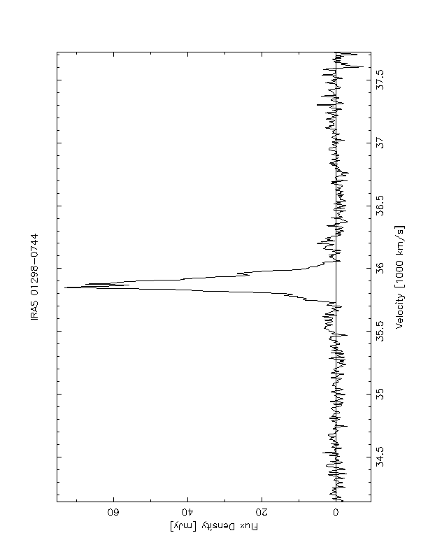
Spectrum of IRAS 01298-0744. Velocity units are radio and measured with
respect to the 1667 MHz line, and the peak intensity is 73.2 mJy.
|
Main
Newsletter
Index
Articles:
OH Masers
Cataclysmic
variables
Measures
Combine SD+
Interferometer
Glish
|
AIPS++ Reduction of GBT Cataclysmic Variable Star Observations
Glen Langston, Chris Orban, Frank Ghigo, Ron Maddalena - NRAO - GB
This document describes reduction of GBT observations of
Flare Star AE Aquarii on 2002 June 17 using the AIPS++ package.
These observations used the L-band receiver system range 1.08 to 1.808 GHz,
the IF rack, fiber optic modems, converter rack, analog filter rack
and the GBT spectrometer.
The purpose of these observations was to test AIPS++ data reduction
of extra solar planet searches.
This document describes the software we developed to
summarize the spectral integrations and
produce an image for flare event detection.
We present limits on the time variability of AE Aquarii over a 50 minute
interval and show evidence for a bright flare with a few second duration.
We present the observations of AE Aquarii with the Green Bank Telescope
(GBT) from 1.008 to 1.808GHz (.3m to .167m) with spectral
resolution of 0.386 MHz per channel over 800 MHz band width.
In 2, we present the observational techniques used,
in 3 we present the observational results, and in 4
we discuss our results and performance of the GBT.
In 5 we summarize and conclude our findings and comment on future work on
CVs and extra-solar planets with the GBT.
GBT Setup on 2002 June 17
For these tests, the GBT tracked AE Aquarii for 50 minutes, starting
on 2002 June 17 at 07:10:46 UTC.
Both X and Y linear polarizations of the GBT 1-2 GHz receiver were used for
this test.
The majority GBT IF chain was set up using glish script:
/home/s6/gbtops/include/setup_a54_lband.g
Adjustments to the system were done using CLEO and the M\&C software
system, which performed well. The 1-2 GHz receiver notch filter
was selected to reject the radar signal. The receiver
1.1 to 1.8 GHz band pass filter was selected.
The first LO was tuned to fixed (topocentric) frequency such that
the 1.408 GHz sky frequency was placed at 3.0 GHz in the first IF chain.
Optical modems one and three were used with their 3 GHz wide band
band filters inserted.
The optical levels were adjusted using the
``Balance'' feature of the CLEO IF rack screen.
The converter modules 1 and 5 were used to convert the 1.408 GHz
sky frequency at 3.0 GHz IF frequency to 1.2 GHz in the converter
rack. LO2 was set to 12300 GHz to achieve this.
The IF chain equation was:
Spectrometer IF frequency=3.0-1.408+10.5-12.3-Sky frequency (GHz)
=0.192-Sky frequency GHz
The negative sign in the ``Sky frequency'' term indicates
there is a net side-band flip in the IF chain.
The data were assigned name GBT01A54_T1 and were written to
directory /home/gbt/GBT01A54_T1
Start Stop Procedure Number of Scan Start
Scan Scan Name Integrations Time (UTC)
36 36 Track 153 07:13:30
37 37 Track 153 07:14:43
38 38 Track 153 07:15:56
39 39 Track 153 07:17:09
40 40 Track 153 07:18:22
41 41 Track 153 07:19:35
42 42 Track 153 07:20:48
43 43 Track 153 07:22:01
44 44 Track 153 07:23:14
45 45 Track 153 07:24:27
46 47 OffOn 306 07:29:13
48 48 Track 153 07:31:13
49 49 Track 153 07:32:26
50 50 Track 153 07:33:38
51 51 Track 153 07:34:51
52 52 Track 153 07:36:04
53 53 Track 117 07:37:17
54 54 Track 153 07:50:19
55 55 Track 153 07:51:32
56 56 Track 153 07:52:45
57 57 Track 153 07:53:58
58 58 Track 153 07:55:11
59 60 OffOn 306 08:00:49
Start times of spectrometer scans obtained on 2002 June 17
Spectrometer Setup
Only the first quadrant of the GBT spectrometer was used for these
tests. The first two high speed (1.6G Hz) samplers were used.
The analog filter number 1 input was in its nominal configuration
and was connected to X linear polarization.
and the output of analog filter 5 was connected to sampler input 2.
The spectrometer was set up to produce 2 2048 channel spectra
in the wide band mode (800 MHz spectral width).
The calibration noise diodes was configured to switch on and off with
a 0.1 second period.
Spectrometer Data Overview
Lag data were taken nearly continuously 50 minutes.
that contained a minimum description of the observational setup.
After obtaining these data, experiments were performed and
programs written to calibrate and display the data.
Individual spectra were examined using the {\tt spectrometer}
program, but this proved to slow for analyzing all 8000 spectra obtained.
A special purpose program {\tt specImage} was written to read all data,
filter, calibrate and grid the data into a FITS format image.
The images were analyzed using AIPS.
Note the bright wide RFI features due to GPS (1.227, 1.575 GHz),
GLONASS (1245, 1602) and Iridium (1625) are always present, but
the calibration process of median filtering in channel (frequency)
makes these features appear to rise and fall.
Since no astronomical features are continuously present, this
processing increases the detect-ability of astronomical sources passing
through the beam, while reducing the RFI impact.
Background on AE Aquarii
Cataclysmic variables (CVs), such as AE Aquarii,
are short-period binary systems that contain a white dwarf as the primary
and a low-mass, late-type star as the secondary.
The low mass companion has expanded to fill its Roche Lobe,
and looses material by accretion onto the white dwarf.
Many of these CVs contain strongly magnetized white dwarfs and are
called magnetic CVs and can be further divided into
AM Hercules-type binaries where the white dwarf rotates synchronously
with revolution, or
DQ Herculis-type where the white dwarf rotates asynchronously
as determined from optical pulsations in the light curve (Patterson 1979).
The acreeting plasma is controlled by the magnetic field which directs the
flow toward the magnetic poles of the white dwarf where the ultraviolet
and soft X-rays are emitted.
This process is believed to be responsible for the short rotation periods of
DQ Her systems as a result of the accretion torque.
AE Aquarii is the most studied DQ Her-type system,
and contains the fastest rotating white dwarf
known (as determined from the optical period of 33.0767s).
It is strongly asynchronous with the orbital revolution of 9.88 hr.
The white dwarf likely has a thin accretion disk of material from the
secondary K dwarf star, accreting at a rate of 10-10
Msolar yr-1.
The magnetic field of the white dwarf is
not well determined, with theoretical arguments for fields of order
105 Gauss (Lamb and Patterson 1983).
Observational constraints from the
turnover frequency of the power law spectrum indicate that the field is
larger than 250 Gauss (Abda-Simon et al. 1993).
Evidence for a much larger field, greater than 106
Gauss (Cropper 1986)
have been disputed by Iksahnov et al. (2002).
The system creates many interesting effects over many wavelengths.
Optical flares have been identified (Chincarini and Walker 1981),
the Einstein satellite easily detected X-ray emission correlated
with optical pulsations (De Jager 1991).
Tev gamma ray observations have
found a correlation with optical flares (Meintjes et al. 1994).
The physical interpretation of X-ray correlations with optical pulsations
is likely not from the white dwarfs surface as inferred from
observations of the temperature of the surface
combined with other measurements and a variety of theoretical reasons,
the energy is likely released in the magnetospheres as concluded in
Ikhsanov 2001.
Radio observations were first made by Bookbinder and Lamb 1987
and Bastian, Dulk, and Chanmugam 1988 (referred to as BDC)
conducted the first
multi-band observations of this highly variable radio source with the
Very Large Array.
They found an approximate power law spectrum between 1.4
and 22.5 GHz with S(v) ~ v.35 as a best fit.
Their prediction that the power law will appear in millimeter and
sub-millimeter observations have been
confirmed by Abda-Simon et al. 1993.
Physically, this indicates that the flare like radio emission is caused by
MeV electrons accelerated during periods
of disruption resulting in synchrotron radiation.
BDC points out that the Cygnus X-3 system creates similar radio
emissions to AE Aquarii and
hypothesizes that AE Aquarii may be a low-power analogous system.
The gamma ray observations mentioned previously seem to corroborate this
idea, indicating that AE Aquarii is similar to many X-ray binaries.
Spectral Features
Three types of spectral features are present in the calibrated data.
The monitor data shows a number of RFI features. Most RFI features
are continuously present, but have varying intensity. Selected
features are listed in Table 1.
Also note that some RFI seems to be very intermittent and initially
were confused with true sources, but the RFI does not exactly
repeat each day.
These are:
- RFI
The highly intensity variable, but frequency constant
structures in the data are due to local and satellite communications
equipment.
- Iridium Bleed
The dominate RFI source in L-Band is the Radar at 1256 and 1292 MHz.
The Iridium signals at 1621-1627 MHz occasionally are so bright that
the entire band is corrupted. These events are clearly detectable
by monitoring the intensity of signals in the Iridium band.
- Spec Glitches
The problems with the Spectrometer lag data are easily detectable
as oscillations in the frequency spectrum due to the step functions
in the lag data.
- Flare Candidate
Discussion
The AIPS++ tools developed by Chris Orban allow conversion of
a series of GBT spectral scans into a single array for image analysis.
These tools have been successfully used for both spectrometer and
spectral processor data.
These tools allow study of the RFI and hardware characteristics of the
spectrometer and spectral processor.
Frequency Frequency Red Source
Minimum Maximum Shift Type Note
(GHz) (GHz) (z)
1.000 1.030 0.296-0.278 Very little gain
1.042 1.150 0.278-0.183 Radar Altimeters
Minimum 11 PM to 7 AM
1.220 1.234 0.141-0.131 GPS L2 = 1227.60
1.242 1.247 0.126-0.122 GLONASS 1246+k x 0.44 MHz
1.256 1.256 0.116 Radar New Bedford,VA
Sweep every 12 sec.
1.292 1.292 0.090 Radar New Bedford, VA
Sweep every 12 sec.
1.311 1.375 0.077-0.032 Periodic Narrow lines
1.381 1.381 0.028 GPS Intermittent
1.417 1.417 0.002
1.424 1.424
1.426 1.426
1.435 1.435
1.447 1.447
1.499 1.501 Laser Range Finder
1.515 1.530
1.548 1.548 INMAR SAT ?
1.552 1.555 INMAR SAT ?
1.557 1.557
1.570 1.580 GPS L1 = 1575.42 MHz
1.602 1.609 GLONASS 1602+k x 0.56 MHz
1.621 1.627 IRIDIUM
1.681 1.686 GEOS SAT ?
1.691 1.691 GEOS SAT ?
1.699 1.710 NOAA WX SAT?
1.724 1.726
Selected RFI sources at L-Band. The redshift column refers
to the redshift expected for a source radiating at the neutral hydrogen
rest frequency.
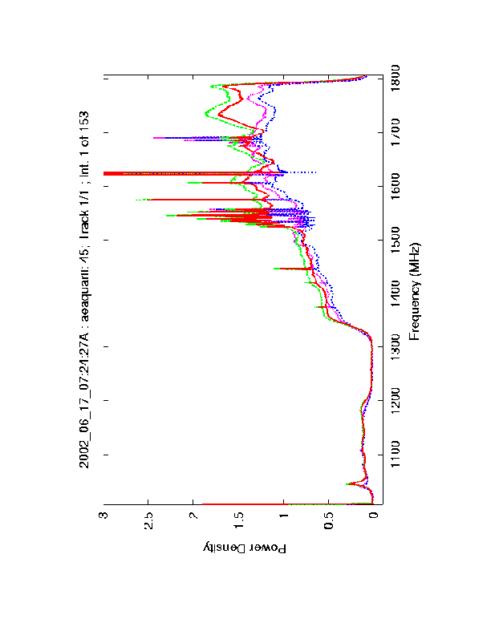
Figure 1. Raw Intensity versus Frequency plot for scan
45, for a 0.4 second integration on AE Aquarii.
The plot shows X polarization Cal On (green),
X polarization Cal Off (red),
Y polarization Cal On (purple) and
Y polarization Cal Off (blue).
Not the strong decrease in raw intensity in the 1200 to 1300 MHz
frequency range, due to the Radar band reject filter.
The majority of the spectral features are due to radio interference,
but the 1420 MHz neutral hydrogen line is also visible.
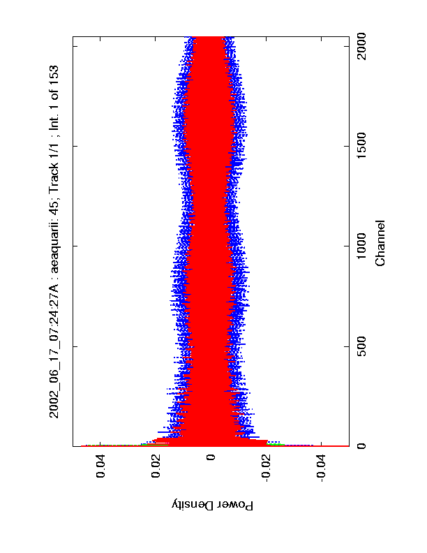
Figure 2. Raw auto correlation data used to
produce the spectra in Figure 1.
The plot shows X polarization Cal On (green),
X pol. Cal Off (red),
Y pol. Cal On (purple) and
Y pol. Cal Off (blue)
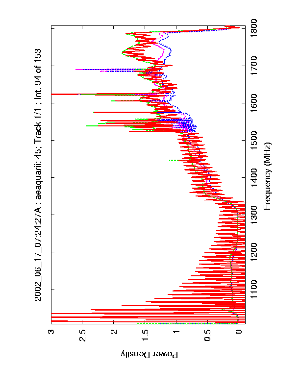
Figure 3. Raw Intensity versus Frequency plot for scan
45, for integration 94 on AE Aquarii.
The strong ringing in the X polarization, Cal Off spectrum is due
to an error in the spectrometer data.
The plot shows X polarization Cal On (green),
X pol. Cal Off (red),
Y pol. Cal On (purple) and
Y pol. Cal Off (blue).
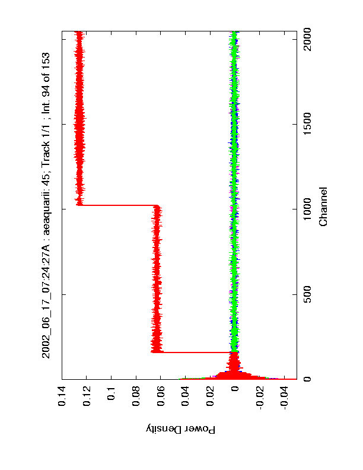
Figure 4. Raw auto correlation data used to
produce the spectra in Figure 3.
The plot shows X polarization Cal On (green),
X pol. Cal Off (red),
Y pol. Cal On (purple) and
Y pol. Cal Off (blue). The steps in the correlations of X Cal Off are
clearly visible.
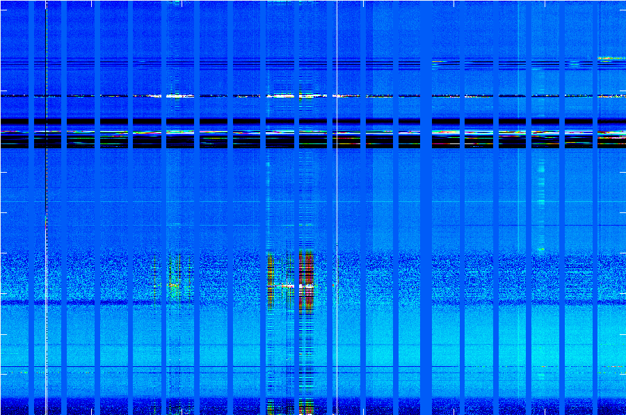
Figure 5. Intensity Image of Frequency versus Time
for
the X polarization for scans [40 41 42 43 44 45 47 48 49 50 51 52 53 54
55 56 47 58 60].
The X axis integration number runs from 1 to 3400. Each scan has 153
integrations with 0.4 seconds per integration..
The Y axis is channel, running from 1 to 2048,
corresponding to 1080 to 1808 MHz.
The intensity scale is calibrated by $T_{sys} (Sig-Ref)/Ref$.
The blue vertical strips marks times between scans.
The spectrometer glitches are at integrations $\sim250$,
$\sim1000$, $\sim1600$, and $\sim2800$.
The RFI shows up as horizontal stripes.
The Iridium bleed is visible in integrations 900 to 1100
and 1500 to 1700.
This image does not show Off scans 46 and 59.
Notice scan 53 has only 117 integrations and the flare candidate in scan 57,
near integration 3000.
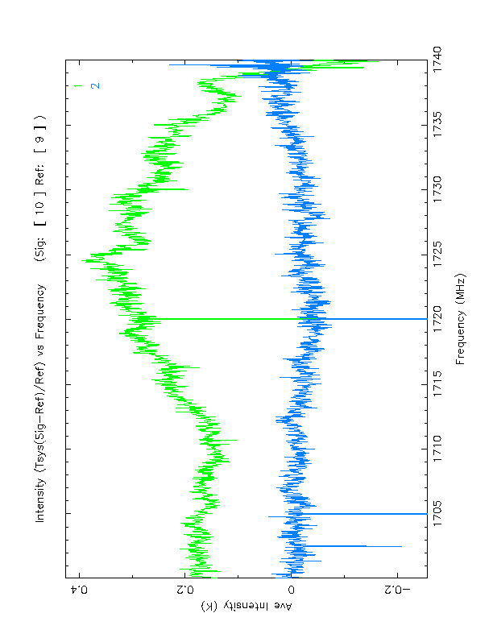
Figure 6. Average intensity versus frequency plot
for AE Aquarii. The data are calibrated by $T_{sys} (Sig-Ref)/Ref$,
for linear X polarization (top, green) and linear Y polarization
(bottom, blue). The linear X polarization data show significant
differences in the Sig-Ref spectra, and the 2.4 MHz ripple due
to the optical modem is clearly visible. The linear Y polarization
shows better intensity stability and little baseline ripple.
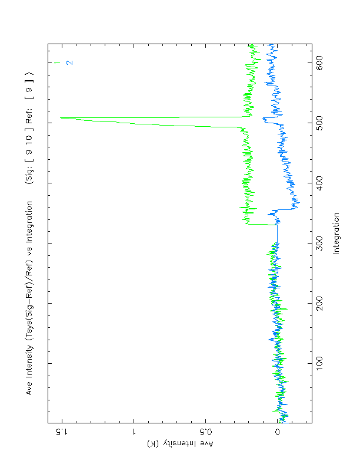
Figure 7. Average intensity versus integration plot
for AE Aquarii. The data are calibrated by T_sys (Sig-Ref)/Ref,
for linear X polarization (top, green) and linear Y polarization
(bottom, blue). To the left is reference scan 9 and to the right is
signal scan 10. Scan 9 data is calibrated relative to
the average of scan 9, so the data must have zero mean.
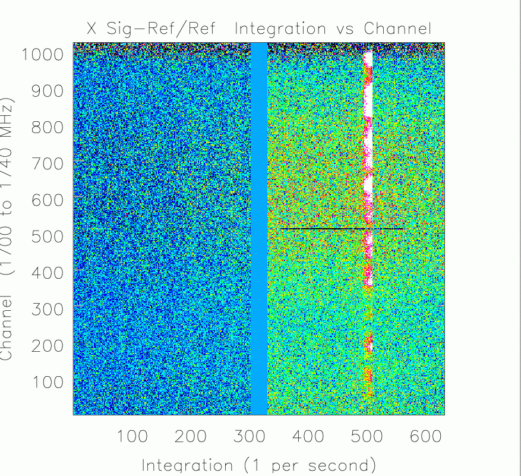
Figure 8. Linear X Intensity Image of Frequency versus Time
for Off (left) and On (right) scans from the spectral processor.
The intensity scale runs from -.5 (black) to 1 K (white).
A flaring event candidate
is seen in the middle of the On scan.
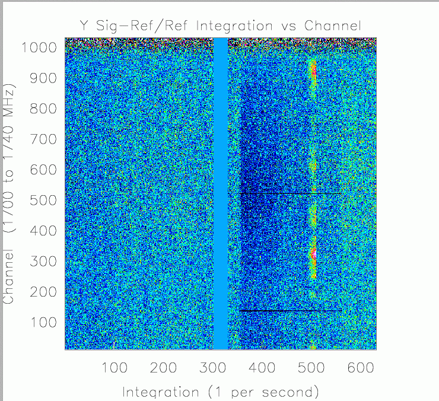
Figure 9. Linear Y Intensity Image of Frequency versus Time
for Off (left) and On (right) scans from the spectral processor.
The intensity scale runs from -.5 (black) to 1 K (white).
Appendix A
Chris Orban's summer 2002 project was to develop AIPS++ glish scripts for
the GBT. These scripts display observations in frequency vs time graphs
and other appropriate formats to find transients with the GBT.
These scripts are described below. The scripts have a modular
design with lower level functions creating global variables passed
to the higher level functions. This design allow all intermediate
data arrays to be examined with the dv.gui() tool.
flareRaw.g
This script takes all the integrations in a scan and creates a channel vs
integration plot to find transients. The displayed data is not CalOn
Cal Off averaged, and no baselines are subtracted so there will be many
time invariant RFI lines and the frequency variant gain has not
been adjusted so there also might be many frequency gradients.
The image displayed is the X polarization CalOn scan.
Note: flareRaw.g also contains statements that create the average sums and
differences between the cal on and cal off info.
flareCal.g
flareCal() calibrates the scans by
T_{cal} * (CalOn + CalOff)/timeAveOf(CalOn - CalOff)/2
where CalOn and CalOff are 1-D arrays with
intensity and channel info (also note that timeAveOf(CalOn-CalOff)
is aveDiff computed from flareRaw.g). The plots are likely to look
similar to flareRaw.g plots, but with some smoothing from the time average
of CalOn-CalOff and different numerical values as the
intensity.
flareSigRef.g
flareSigRef() subtracts the baseline and calibrates the data
using flareRaw()
on the signal scan and on the reference scans.
flareRaw(signal-scan) creates a 2-D array of cal=On with frequency
and time axes, flareRaw(reference-scan) calculates aveSum of the
reference scan then the aveSum from
flareRaw(next-reference-scan)
is averaged with it, and so on for all the reference-scans.
This creates a time average over all the reference scans called
aveSumXRef (aveSumXRef is also made simultaneously). The final
calibration routine subtracts aveSumXRef from each integration of the
2-D signal array and divides by aveSumXRef that is then
multiplied by T_System.
flareCollage.g
collage() takes 2-dimensional arrays and pastes them together.
It is very valuable for combining the calibrated frequency vs time
images.
flareIntensity.g
Given a range of channels intensity() creates an Ave-Intensity vs
integration plot from the data. By specifying the channels to be
averaged, RFI free regions can be analyzed, and since flare stars
create broadband bursts this is very reasonable. The intensity vs time
plot on the results page were created with this tool.
flare.g
This glish file includes all of the glish functions above, and loads
the other procedures quickly, in the correct order. An example
execution of this script is shown in Appendix B.
flare() is a simple for loop that requests an array of signal scans from
function flareSigRef() one by one.
Next collage() is run in flare() to combine the
calibrated images into a large array of many calibrated images over many
integrations.
Appendix B: Sample AIPS++ session
The scripts above are used in the following example with spectral processor
data. Start up aips++ and run it in the manner shown in the table above.
using AIPS++:
source /home/aips++/gbt/aipsinit.sh # Use the standard version
cd bigLocalDiskArea} # Go to a clear area to run aips++
aips++ -l uni2.g} # Chris's scripts use uni2
- import( '/home/gbtdata/GBT01A54_T2',,,9,10)}
# Get two Scans
- include 'flare.g'} # load all the flare functions
- refFreq := 1720; bandWidth := 40
#Over-ride frequency calibration
- flare ( [9,10], 9)}#Compute images of scans 9 and 10
#reference scan is 9.
#A PG plot window will appear in a few minutes
#The first plot will be flat, the next plots
#show Tsys((signal-reference)/reference).
#This function created figure 6, above.
- intensityCollage( 768, 870)}
# Create Intensity vs time plots,
#averaging channels 768 to 870, corresponding
#to 2 MHz centered on 1726 MHz.
#This function created figure 7, above.
- include 'viewer.g'}#Load array viewer
- dv.gui()} #Start array viewer user interface.
#Select collageArrayX and rasterimage button
#Use the ``Adjust'' button to set labels/colors
#This function created figures 8 and 9, above.
Editor's Notes:
- Please contact Glen Langston (glangsto@nrao.edu) to obtain
the scripts used in this paper.
- The 'UNIPOPS' functionality referred to in this article has been subsumed
into the main single dish application in AIPS++. Please see the GBT Standard
Reduction Guide Cookbook for examples and usage.
|
Main
Newsletter
Index
Articles:
OH Masers
Cataclysmic
variables
Measures
Combine SD+
Interferometer
Glish
|
Coordinate Conversions in AIPS++ - The measures Tool
George Moellenbrock - NRAO-AOC
The measures tool in aips++ is the tool to use for expressing
coordinates in time, direction, position, frequency or velocity and
for performing coordinate reference conversions of all kinds.
A "measure" is a set of one or more values with a coordinate reference
designation. The coordinate values are stored as quantities (numeric
values with units attached). For example, a specific instant in time,
say 2002/10/07 at 14:30:45 UTC, would be specified in an "epoch
measure" record as:
[type=epoch, refer=UTC, m0=[value=52554.6047, unit=d]]
The measure type (epoch), reference (UTC), and value
(time since MJD=0.0 in units of days) are all stored in this
record.
Similarly, a direction in space, such as 17h45m37.164s, -28d56m10.223s,
the J2000 cooordinates of the galactic center, would appear as a direction
measure as:
[type=direction, refer=J2000, m1=[value=-0.505031494, unit=rad],
m0=[unit=rad, value=-1.63354352]]
Note that 2 quantities (the R.A. and Decl.) are, of course, required
to specify a direction in space, and these values are stored in units
of radians.
Other measures types will be shown in the examples below.
Reference conversions of many different types are available, including
those for epoch (time) measures, direction (in space) measures,
position (on earth) measures, frequency and radial velocity measures,
among others. This article describes some basic use of the measures
tool for the most common types of reference conversions.
When an aips++ session is started, a default measures tool called 'dm' is
created. It is used by many aips++ tools for coordinate conversions,
and is available for general use as well.
The measures tool can be operated via glish CLI commands, or through a
suite of custom GUIs. The examples given below use the glish CLI form
for brevity, and to illustrate how measures operations might be coded
in a glish script. For quick-and-dirty "back-of-the envelope"
conversions, the user might wish to use the GUI interface instead. To
invoke the main measures GUI interface, select the default measures
tool (dm) in the "Tools in Use" list in the toolmanager and press the
"Show" button, or simply type 'dm.gui()' at the CLI. Separate GUIs
for conversions of each measures type are available from the 'Tool'
menu in the main measure GUI. While reading this article, the user
may wish to duplicate the examples given below in the GUI. Some hints
for this will be given along the way.
The measures tool is thoroughly described in the the AIPS++ User
Reference Manual, and the reader is encouraged to consult that
document for details not presented here. Since measures contain
quantities, the quanta tool is often very useful for manipulating and
rendering constituents of measures. Thus, the quanta tool
documentation is thus also worth consulting, especially for detailed
information on the syntax for expressing values with units of various
kinds.
Measures tool functions
In this section, we list the measures tool functions in order to get
a feeling for the scope of the tool. Demonstration of their use will
be made in the examples to follow.
The fundamental measures tool functions are those which declare measures
of various types, and which perform the reference conversions.
These include:
'epoch' - defines epoch measures (coordinate references include: LAST
LMST GMST1 GAST UT1 UT2 UTC TAI TDT TCG TDB TCB IAT GMST TT ET UT)
'direction' - defines direction measures (J2000 JMEAN JTRUE APP B1950
BMEAN BTRUE GALACTIC HADEC AZEL AZELSW AZELNE AZELGEO AZELSWGEO AZELNEGEO
JNAT ECLIPTIC MECLIPTIC TECLIPTIC SUPERGAL ITRF TOPO)
'position' - defines position measures (ITRF WGS84)
'frequency' - defines frequency measures (REST LSRK LSRD BARY GEO
TOPO GALACTO)
'radialvelocity'- defines radial velocity measures (REST LSRK LSRD
BARY GEO TOPO GALACTO)
'doppler' - defines doppler measures (RADIO Z RATIO BETA GAMMA OPTICAL
TRUE RELATIVISTIC), which describe alternate ways to specify radial
velocities; several functions exist to manipulate the closely-related
doppler, radialvelocitiy and frequency measures
'doframe' - defines particular observational configuration information
(expressed as measures of various types) required for some conversions
(e.g., a position measure describing the observer's location on earth
is required for epoch conversions involving local sidereal time)
'measure' - is the universal function for transforming measures between
coordinate references
Several utililty functions are available for creating measures and
manipulating measures records. These include:
'observatory' - provides canned position measures from a catalog of
observatory positions
'source' - provides canned direction measures from a catalog of source
positions (e.g., 3C, B1950 names)
'spectralline' - provides canned frequency measuares from a catalog of
spectral lines
'toradialvelocity' - forms radialvelocity measure from a doppler measure
by assosiating the physical velocity implied by the doppler with a
radialvelocity coordinate reference
'tofrequency' - forms a frequency measure from a doppler or
radialvelocity measure and a rest frequency by doppler-shifing the
rest frequency according to the doppler or radialvelocity measures,
and associating the result with a frequency coordinate reference
'todoppler' - forms a doppler measure from a radialvelocity measure or
from a frequency measure and a rest frequency by interpretting a
(physical) radialvelocity as a doppler (of some doppler coordinate
reference), or calculating the doppler from observed and rest
frequency measures
'torestfrequency' - forms a frequency measure (in the REST coordinate
reference) from another frequency measure and a doppler measure by
deriving the rest frequency implied by the frequency/doppler pair
'show' - formats measures of all types for readability; see the quanta
tool documentation for options for formats and how to set them
'getvalue' - extracts the quantity (or vector of quantities) from a
measure record.
'getref' - extracts the measure reference
'separation' - returns angular separation between two direction measures
'posangle' - returns position angle of separation between to direction
measures
Consult the measures tool documentation in the User Reference Manual
for more information on these and other functions.
Conversions in Space and Time
To declare an epoch measure, provide a reference and time value to the
dm.epoch() function:
- t1utc:=dm.epoch(rf='UTC',
v0='2002/10/07/14:30:45');
The measures tool recognizes this form for specifying a date/time
value; a simple time quanta (as quanta records or strings) would also
work, e.g., [value=52554.6047, unit=d] or '52554.6047d', etc. The
corresponding epoch measure record will be stored in the glish
variable t1utc. Use the dm.show() function to render the measure in a
readable form:
- dm.show(v=t1utc);
2002/10/07/14:30:45 UTC
To convert this instant in time to Greenwich Mean Sidereal Time
(GMST), execute the dm.measure() function as follows:
t1gmst:=dm.measure(v=t1utc,
rf='GMST');
The glish variable t1gmst now contains an epoch measure in the GMST
coordinate reference.
To extract this time as a readable string, use the dm.show() function
(first using the dq.setformat() function to set the date/time format
appropriately for a sidereal time):
- dq.setformat('dtime','last')
- dm.show(v=t1gmst)
15:35:01 GMST1
If using the GUI:
- Select "Epoch" in the "Tool" menu, and an "Epoch handling" GUI will
appear.
- Type in the date/time (YYYY/MM/DD/HH:MM:SS or as a string quanta)
in the Input field.
- Set the coordinate reference (in this case, 'UTC') properly on the
menu button to the left of the Convert button.
- Select 'GMST' on the coordinate reference button in the "Result"
side of the GUI, and then press the Convert button.
This is the general form for specifying input measures and converting
them in the handling GUIs for each measures type.
Similarly, to declare a direction in space, provide a reference and
longitude/latitude values to the dm.direction() function:
- sky1j:=dm.direction(rf='J2000',
v0='17h45m37.164', # RA
v1='-28d56m10.223'); # Decl
Again, the measures tool recognizes these forms for specifying the angles;
simple angle quantities (as quanta records or strings) would also work,
e.g., [value=266.40485, unit=deg], or '266.40485deg', and
[value=-28.9361731, unit=deg] or '-28.9361731deg', etc.
- dm.show(v=sky1j);
17:45:37.164 -028.56.10.223 J2000
Convert this direction to, say, GALACTIC coordinates:
- sky1g:=dm.measure(v=sky1j,
rf='GALACTIC');
- dm.show(v=sky1g);
24:00:00.000 +000.00.00.001 GALACTIC
Indeed, the sky1j measure contains the coordinates of the galactic center
in the J2000 coordinate reference.
To perform these same operations in the GUI, select 'Direction' in the
'Tool' menu, and procede as for the Epoch conversion example.
Finally, to delare a specific location on the earth, provide a reference
and longitude/latitude/elevation values to the dm.position() function:
- loc1wgs:=dm.position(rf='WGS84', # a geodetic datum
v0='-107d37m06.001', # Long.
v1='+034d04m43.728', # Lat.
v2='2114.89023m'); # Elev.
- dq.setformat('long','dms') # use dms (not hms) for longitude
- dm.show(v=loc1wgs)
-107.37.06.001 +034.04.43.728 2114.89023 m WGS84
To convert these geodetic coordinates to geocentric:
- loc1itrf:=dm.measure(v=loc1wgs,
rf='ITRF');
- dm.show(v=loc1itrf);
-107.37.06.001 +033.54.01.750 6373576.28 m ITRF
Again, to perform these same operations in the GUI, select 'Position'
in the 'Tool' menu and procede as before.
Frame-dependent Measures conversions
Epoch-dependent direction measures:
Now, there are more interesting measure conversions to consider. For
example, the apparent sky coordinates of a direction depend upon the
the date and time. This date and time could be the epoch measure
specified above, t1utc. To establish this epoch as the relevant one
for subsequent time-dependent conversions, using the dm.doframe()
function:
- dm.doframe(v=t1utc);
This epoch measure is now in the measures "frame", which exists to
store observational configuration information required for some
conversions. Use the dm.showframe() function to recall what information
is in the frame:
- dm.showframe();
epoch: 2002/10/07/14:30:45 UTC
Now do the direction conversion with measure():
- sky1appt:=dm.measure(v=sky1j,
rf='APP')
- dq.setformat('long','hms') # use hms (not dms) for longitude
- dm.show(v=sky1appt)
17:45:45.906 -028.56.18.525 APP
Note that it doesn't matter which coordinate reference (UTC or GMST)
is used for the epoch measure since both refer to the same physical
instant in time.
To establish this frame information in the GUI, specify the epoch
measure in the Input section of the Epoch handling GUI, and press
the 'Frame it' button. The Frame GUI will appear with the Epoch
fields filled. Now conversions relying on Epoch frame information
will use this epoch measure when the Convert button is pressed.
The 'Frame it' button is available in all of the measures handling
GUIs.
Position-dependent Epoch measures:
Similarly, the local sidereal time corresponding to a UTC time measure
such as t1utc depends upon what "local" means. This locality could be the
location specified in the position measure loc1wgs. To establish this
location as the relevant one for the epoch coordinate conversion (and
any others that may follow), use the dm.doframe() function:
- dm.doframe(v=loc1wgs);
- dq.setformat('long','dms') # use dms (not hms) for longitude
- dm.showframe();
epoch: 2002/10/07/14:30:45 UTC
position: -107.37.06.001 +034.04.43.728 2114.89023 m WGS84
Note that the epoch frame information is still present (but is
irrelevent to the epoch coordinate reference conversion illustrated
next).
Now do the conversion with dm.measure():
- t1lmst:=dm.measure(v=t1utc,
rf='LMST');
- dm.show(v=t1lmst);
08:24:33 LMST
Again, the specific coordinate references of the measures in the frame
do not matter as long as they refer to the exact physical epoch,
position, and direction desired.
Epoch- and Position-dependent Direction measures:
Finally, it is often desirable to express direction measures in local
coordinates, like Azimuth-Elevation. This depends upon both the
date/time and the observers location. Since both an epoch measure and
a position measure have already been established with dm.doframe(), we
can convert a direction measure to AZEL:
- sky1azel:=dm.measure(v=sky1j,
rf='AZEL');
- dq.setformat('long','dms') # use dms (not hms) for longitude
- dm.show(v=sky1azel)
+092.39.52.620 -055.58.43.259 AZEL
So, the galactic center is well below the horizon at the position and
epoch in the frame.
Velocity measures
Another, often useful, measure to consider is the velocity of an
object (a star or galaxy, say) along the line of sight as observed at
a certain position at a certain time. The radialvelocity measure is
available to express this component of an object's velocity as
referred to a variety of coordinate references. (It is assumed in
measures that the full 3D space velocity of the object is constant in
direction and magnitude.) For objects not coincident with the
observer (at the position measure in the frame), this velocity will be
a non-trivial function of time, direction, and position since it will
contain components due to the motion of the earth: its rotation about
its axis, its revolution around the sun, the motion of the solar
system through the galaxy. Therefore, radialvelocity reference
conversions in general rely on epoch, direction, and position measures
in the measures frame.
So, using the epoch and position measures already in the frame and
adding to it the direction measure used above, we can determine the
velocity of the location described by the position measure toward the
galactic center (the direction measure), at this time (the epoch
measure) by assuming zero velocity at the topocenter and converting
this to the galacto-centric coordinate reference:
- dm.doframe(v=sky1g); # direction into frame
- rv1topo:=dm.radialvelocity(rf='TOPO',
v0='0m/s');
# zero velocity at topocenter
- rv1gal:=dm.measure(v=rv1topo, # convert to galacto-center
rf='GALACTO');
- dm.show(v=rv1gal)
-18.9756135 km/s GALACTO
The sign convention is such that positive values indicate radial
velocities away from the observer (at the position measure, toward the
direction measure). Thus, the velocity of the topocenter is toward the
galactic center at the frame epoch.
In the GUI, perform velocity conversions in the 'RadialVelocity
handling' GUI.
Frequencies and dopplers
The handling of the frequency of electromagnetic waves in measures
tends to be somewhat more complicated than the examples described so
far. This is because a systematic velocity of the emitter of the EM
radiation must usually be considered, and the means of specifying this
velocity are varied and often confusing. Indeed a whole measures type
has been established to describe the various forms in which a doppler
shift may be expressed: the doppler measure.
Doppler measures are stored as velocities (i.e.,with units of
velocity), but are meaningful only as fractions of the speed of light,
and as interpretted according to the definition of the particular
doppler coordinate reference. For example, the OPTICAL (or Z) doppler
is the classical redshift and is defined such that 1+z = l/lo where z
is the (fractional) doppler shift, lo is a rest wavelength and l is
the observed wavelength. The value stored in the doppler measure is
the velocity, v, such that z = v/c, where c is the speed of light.
Another common doppler coordinate reference is RADIO, defined such
that 1+v/c = fo/f, where fo is a rest frequency and f is the observed
frequency, and v is the value stored in the doppler measure. The
value stored in the doppler measure only corresponds exactly to a real
physical velocity if expressed in the RELATIVISTIC (or TRUE)
reference, which is defined such that v/c = (1-F^2)/(1+F^2), where
F=f/fo.
For example, consider a galaxy at z=1. The doppler measure describing
this would be:
- dop1z:=dm.doppler(rf='Z',
v0=1.0);
- dm.show(v=dop1z)
299792.458 km/s OPTICAL
Note that z=1 is stored as the speed of light (v/c = 1).
The true, physical radial velocity may be obtained by converting this
doppler to the TRUE reference:
- dop1true:=dm.measure(v=dop1z,
rf='TRUE');
- dm.show(v=dop1true)
179875.475 km/s TRUE
So z=1 is actually 60% of the speed of light.
It is more useful, perhaps, to cast the velocity implied by this
doppler measure as a radialvelocity measure w.r.t. some appropriate
coordinate reference, say the barycenter, using the
dm.toradialvelocity() function:
- rv2bary:=dm.toradialvelocity(rf='BARY',
v0=dop1z);
- dm.show(v=rv2bary);
179875.475 km/s BARY
The doppler "velocity" is converted to a physical velocity and is now
associated with the (spatial) radialvelocity coordinate reference
system, and the corresponding velocity of the galaxy in other
radialvelocity coordinate references may be determined, according to
epoch, direction, and position measures stored in the frame. Note
that the direction measure in the frame specifies the direction to the
galaxy.
In the GUI: While there exists a 'Doppler handling' GUI that is useful
for conversions of doppler measures, dopplers and radialvelocities are
conveniently unified in the RadialVelocity handling GUI, where both
the radial velocity coordinate reference and the doppler type can be
specified.
Now, we may be interested in how to tune our radiotelescope to properly
observe a certain spectral line in such a galaxy, say HI. For this,
we combine the doppler measure with a rest frequency, and form a frequency
measure in the chosen frequency coordinate reference (BARY). First
use the dm.spectralline() function to obtain the HI rest frequency:
- fHIrest:=dm.spectralline(name='HI');
- dm.show(v=fHIrest)
1420.40575 MHz REST
And now use the doppler to shift this frequency and assign the result
to the barycentric frame:
- fHIbary:=dm.tofrequency(rf='BARY',
v0=dop1z,
rfq=fHIrest);
- dm.show(v=fHIbary)
710.202876 MHz BARY
Fill the frame with the necessary information (in this example: the GBT, at
some other date, some hypothetical sky coordinates for the galaxy):
- gbt:=dm.observatory(name='GBT');
- dm.doframe(v=gbt);
- t2utc:=dm.epoch(rf='utc',
v0='2002/10/16/12:00:00')
- dm.doframe(v=t2utc);
- gal2j:=dm.direction(rf='J2000', # hypothetical galaxy coords
v0='13h43m00s',
v1='46d21m54s')
- dm.doframe(gal2j);
- dm.showframe()
epoch: 2002/10/16/12:00:00 UTC
position: -079.50.23.400 +038.25.59.230 807.435 m WGS84
direction: -154.15.00.000 +046.21.54.000 J2000
And now convert the frequency to topocentric:
fHItopo:=dm.measure(v=fHIbary,
rf='TOPO');
- dm.show(fHItopo)
710.222081 MHz TOPO
Of course, this frequency will vary with time as the earth rotates,
etc.:
- t3utc:=dm.epoch(rf='utc', # 2 hours later
v0='2002/10/16/14:00:00')
- dm.doframe(t3utc);
- dm.show( dm.measure(v=fHIbary,rf='TOPO') );
710.222011 MHz TOPO
Typically, spectral line observations will be doppler-tracked,
wherein the receiver tuning will be regularly or even continuously
updated to compensate for the earth's motion. The data will then be
rendered in a frequency reference (say, LSRK) where the observed
spectral lines are stationary.
To perform these operations in the GUI:
- Specify the epoch, direction, and position measures in the
appropriate handling GUIs and Frame them. Alternatively, use the
Frame menu in the main measures gui.
- Specify the HI rest frequency in the Frequency handling GUI (using
the "Line" menu button. Frame it.
- Specify the systemic velocity in the RadialVelocity handling GUI.
Select doppler reference 'Z' and velocity reference 'BARY'.
- Select 'Frequency' in the Info button (far right) on the
RadialVelocity handling GUI
- Select the desired output velocity reference (TOPO), and doppler
type (any) and press Convert.
The radialvelocity is converted to the TOPO-centric coordinate
reference, and the shifted frequency is reported as well.
Finally, we may wish to determine the relative (to systemic) velocity of
HI detected at some other (nearby) topocentric frequency, say 715MHz:
- fHIanom:=dm.frequency(rf='TOPO',
v0='715MHz')
This is most conveniently done by determining a doppler measure that
connects this anomalous (topo) frequency to the topo frequency of HI
determined above. Using the dm.todoppler() function:
- dHIanom:=dm.todoppler(rf='TRUE',
v0=fHIanom,
rfq=fHItopo);
- dm.show(v=dHIanom);
-2010.05742 km/s TRUE
In practice, these last conversions are usually done in a frequency
coordinate reference where the lines are stationary, e.g., the
reference to which the observations were doppler-tracked. However,
since the radial velocity is a relative one, it doesn't matter which
coordinate reference is used.
In the GUI:
- Insert fHItopo in the frame as a REST frequency (note that it must
be in the measures coordinate reference 'REST' for the 'Frame it'
button to appear in the Frequency handling gui).
- In the Application menu of the main measures gui, select
'Frequency to velocity' and specify 715MHz
- The relative radial velocity will appear on the main measures gui.
|
Main
Newsletter
Index
Articles:
OH Masers
Cataclysmic
variables
Measures
Combine SD+
Interferometer
Glish
|
Combining Single Dish and Synthesis Data in AIPS++
T. Cornwell - NRAO-AOC
The combination of single dish and synthesis observations is a natural fit to
the AIPS++ way of doing things. Together the Measurement Equation (ME) and the
Measurement Set (MS) allow the joint processing of data from diverse
instruments. The special case of combining, for example, GBT and VLA data is
therefore quite simple conceptually. The steps are:
- The observations are calibrated separately and then combined using
ms.concat.
- The imager tool can then be used to make an image using any of a number of
algorithms: a "dirty image" (imager.makeimage), a "clean" image (imager.clean
with multiple possible CLEAN algorithm variants), or a Maximum Entropy image
(imager.mem).
That's it, as least conceptually. Note that single dish and synthesis are
treated on an equal footing - neither plays a lesser role (as single dish does
in some combination algorithms).
This type of processing works because AIPS++ was designed with this (and other
similar capabilities) in mind. Thus the ME and MS were designed to be capable
of handling quite different types of telescope.
Furthermore, the deconvolution algorithms in imager were designed to require
few assumptions about the properties of the observations. A minor/major cycle
approach is used in all algorithms - in the minor cycle, an approximate PSF is
used to deconvolve the brightest features in the residual image, and in the
major cycle, a completely correct residual image calculation is performed.
This is similar in spirit to the original Clark CLEAN algorithm. The
minor/major cycle scheme is natural for CLEAN algorithms but the Maximum
Entropy case required some special development by Mark Holdaway. The
approximate PSF is simply the point spread function calculated for a point at
the center of the image. To obtain this, a full simulation is done. This works
well providing that the sampling is reasonably uniform (both in the image and
Fourier planes).
The software design for the Measurement Equation was first described by
Cornwell and Wieringa (1997, see
http://www.cv.nrao.edu/adass/adassVI/cornwellt.html).
Some changes have occurred as the design has been filled out but the overall
structure remains much the same. The key change required in accommodating
joint single dish and synthesis processing has been the development of a class
derived from FTMachine that can process both single dish and synthesis data.
This class, called GridBoth, is quite thin and mostly delegates to the
relevant classes for single dish and synthesis processing.
A substantial software change has been to incorporate the correction for the
primary beam into the FTMachine. In the case of single dish, this is more
natural than the original design. In addition, in the future, we plan to
exploit this re-structuring in a synthesis gridding optimization suggested
independently by John Bunton and Steve Myers, whereby the Fourier transform of
the primary beam is used in gridding. This promises to be a very worthwhile
optimization, and should speed up processing in some cases.
How well does it work? To allow rigorous testing, Kumar Golap worked hard to
give the simulator tool the ability to simulate joint single dish and
synthesis observations. This is now part of the standard tool (to be in
release 2.0).
We simulated complementary observations of a moderately complex source, using
the 21 by 21 pointings of Green Bank Telescope and and 5 by 5 pointings of
the D configuration of the Very Large Array. Critical image plan sampling was
used for both single dish and synthesis mosaic observations. A single MS
containing the combined data was produced by the simulator tool and fed to the
imager for imaging. The entire script is given here.
Below, we show the original (smoothed) model, the restored image obtained for
the VLA plus GBT, and the error patterns for VLA only, and VLA plus GBT.
The error pattern is calculated by subtracting the original (smoothed) model
from the reconstruction. As expected, the errors when omitting the GBT are
substantial, showing that the GBT observation adds substantially to the
imaging of this source.
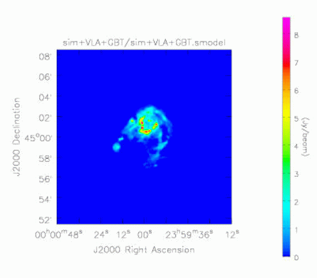
Figure 1 Smoothed model
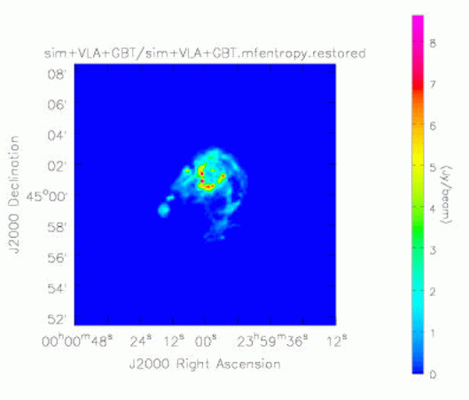
Figure 2 Maximum Entropy image made by combining VLA and GBT data
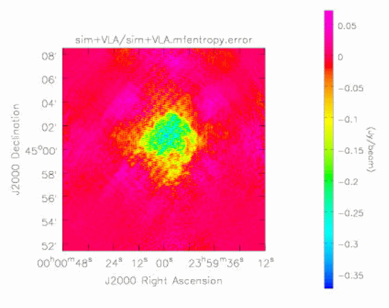
Figure 3 Error image for VLA-only Maximum Entropy image
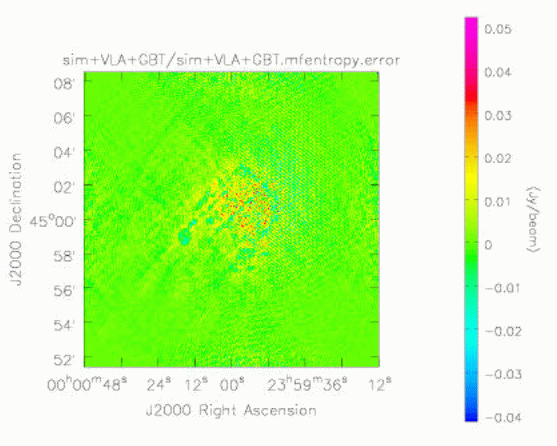
Figure 4 Error image for VLA + GBT Maximum Entropy image
How does this approach perform compared to the feathering technique?
Feathering is the combination of low and high resolution images by weighted
combination in the Fourier plane. The weighting function used is the point
spread function of the low resolution image. The function imager.feather
performs feathering. Below we show the feathered image made by combining the
GBT only image and the VLA only image. It is apparent that the (non-linear)
joint deconvolution out-performs the (linear) feathering. An analogous result
holds for the superiority of joint deconvolution in mosaicing.
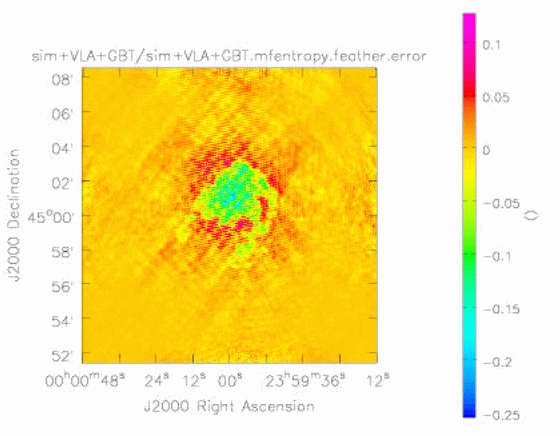
Figure 5 Error pattern for image feathered from low resolution GBT ME image and high resolution VLA ME image
This new capability is available in the development version of AIPS++ at the
consortium sites, and will be fully available in release 2.0, scheduled for
mid 2003.
include 'simulator.g';
# pass in an image and simulate away;
const sim:=function(modfile, noise='0.0Jy', dovla=T, dogbt=T, sim=T,
gridfunction='pb',ftmachine='both',scale=1,weight=1,
algorithms='mem')
{
include 'logger.g';
dl.purge(0);
include 'webpublish.g';
testdir := 'sim';
if(dovla) testdir:=spaste(testdir,'+VLA');
if(dogbt) testdir:=spaste(testdir,'+GBT');
if(sim) {
note('Cleaning up directory ', testdir);
ok := shell(paste("rm -fr ", testdir));
if (ok::status) { throw('Cleanup of ', testdir, 'fails!'); };
ok := shell(paste("mkdir", testdir));
if (ok::status) { throw("mkdir", testdir, "fails!") };
}
resultsdir := spaste(testdir, '/results');
webpub:=webpublish(resultsdir, 'index.html',
spaste('AIPS++ simulation of GBT and VLA observations and
processing. This includes ', testdir ~ s/sim\+//g,
' observations.'));
if(is_fail(webpub)) fail;
webpub.comments('This simulates processing.');
msname := spaste(testdir, '/',testdir, '.ms');
simmodel := spaste(testdir, '/',testdir, '.model');
simsmodel:= spaste(testdir, '/',testdir, '.smodel');
simtemp := spaste(testdir, '/',testdir, '.temp');
simpsf := spaste(testdir, '/',testdir, '.psf');
simempty := spaste(testdir, '/',testdir, '.empty');
simmask := spaste(testdir, '/',testdir, '.mask');
simvp := spaste(testdir, '/',testdir, '.vp');
dir0 := dm.direction('j2000', '0h0m0.0', '45.00.00.00');
reftime := dm.epoch('iat', '2001/01/01');
if(modfile=='') {
include 'sysinfo.g';
sysroot := sysinfo().root();
modfile:=spaste(sysroot, '/data/demo/M31.model.fits');
}
note('The model is ', modfile);
if(sim) {
include 'vpmanager.g';
vp:=vpmanager();
if(dovla) vp.setcannedpb('VLA', commonpb='DEFAULT');
if(dogbt) vp.setcannedpb('GBT', commonpb='NONE');
vp.summarizevps(T);
vp.saveastable(tablename=simvp);
note('Create the empty measurementset');
mysim := simulator();
mysim.setspwindow(row=1, spwname='XBAND', freq='8.0GHz',
deltafreq='50.0MHz',freqresolution='50.0MHz', nchannels=1,
stokes='RR LL');
if(dovla) {
note('Simulating VLA');
posvla := dm.observatory('vla');
#
# Define VLA C array by hand, local coordinates
#
xx := [41.1100006,134.110001,268.309998,439.410004,644.210022,880.309998,
1147.10999,1442.41003,1765.41003,-36.7900009,-121.690002,-244.789993,
-401.190002,-588.48999,-804.690002,-1048.48999,-1318.48999,-1613.98999,
-4.38999987,-11.29,-22.7900009,-37.6899986,-55.3899994,-75.8899994,
-99.0899963,-124.690002,-152.690002];
yy := [3.51999998,-39.8300018,-102.480003,-182.149994,-277.589996,
-387.839996 -512.119995,-649.76001,-800.450012,-2.58999991,-59.9099998,
-142.889999,-248.410004,-374.690002,-520.599976,-685,-867.099976,
-1066.42004,77.1500015,156.910004,287.980011,457.429993,660.409973,
894.700012,1158.82996,1451.43005, 1771.48999];
zz := [0.25,-0.439999998,-1.46000004,-3.77999997,-5.9000001,-7.28999996,
-8.48999977,-10.5,-9.56000042,0.25,-0.699999988,-1.79999995,-3.28999996,
-4.78999996,-6.48999977,-9.17000008,-12.5299997,-15.3699999,1.25999999,
2.42000008,4.23000002,6.65999985,9.5,12.7700005,16.6800003,21.2299995,
26.3299999];
#
# We want roughly D configuration
#
xx /:=3.3;
yy /:=3.3;
zz /:=3.3;
diam := 0.0 * [1:27] + 25.0;
mysim.setconfig(telescopename='VLA', x=xx, y=yy, z=zz,
dishdiameter=diam,
mount='alt-az', antname='VLA',
coordsystem='local', referencelocation=posvla);
mysim.setfield(sourcename='M31SIM', sourcedirection=dir0,
integrations=1, xmospointings=5, ymospointings=5,
mosspacing=1.0);
mysim.settimes('60s', '300s', T, '-14400s', '+14400s');
mysim.create(newms=msname, shadowlimit=0.001,
elevationlimit='8.0deg', autocorrwt=0.0);
}
if(dogbt) {
note('Simulating GBT');
posgbt := dm.observatory('gbt');
mysim.setconfig(telescopename='GBT', x=[0.0], y=[0.0], z=[0.0],
dishdiameter=[100.0],
mount='alt-az', antname='GBT',
coordsystem='local', referencelocation=posgbt);
mysim.setfield(sourcename='M31SIM', sourcedirection=dir0,
integrations=1, xmospointings=21, ymospointings=21,
mosspacing=1.0);
mysim.settimes('1s', '1s', T, '14401s', '15283s');
if(!dovla) {
mysim.create(newms=msname, shadowlimit=0.001,
elevationlimit='8.0deg', autocorrwt=1.0);
}
else {
mysim.add(elevationlimit='8.0deg', autocorrwt=1.0);
}
}
mysim.done();
note('Make an empty image from the MS, and fill it with the');
note('the model image;this is to get all the coordinates to be right');
myimg1 := image(modfile);
# this is the model image with bad coordinates
imgshape := myimg1.shape();
imsize := imgshape[1];
myimager := imager(msname);
myimager.setdata(mode="none" , nchan=1, start=1, step=1,
mstart="0km/s",mstep="0km/s",spwid=1,fieldid=1:1000);
myimager.setimage(nx=imsize,ny=imsize,cellx="2arcsec",celly="2arcsec",
stokes="I" , fieldid=1, facets=1, doshift=T,
phasecenter=dir0);
myimager.setoptions(ftmachine=ftmachine, gridfunction="pb");
myimager.make(simmodel);
myimager.done();
myimg2 := image(simmodel);
# this is the dummy image with correct coordinates
arr1 := myimg1.getchunk();
myimg2.putchunk( arr1 );
# now this image has the model pixels and
# the correct coordinates
myimg1.done();
myimg2.done();
note('Made model image with correct coordinates');
note('Read in the MS again and predict from this new image');
mysim := simulatorfromms(msname);
mysim.setoptions(ftmachine=ftmachine, gridfunction="pb");
if(dovla) mysim.setvp(dovp=T, vptable=simvp, usedefaultvp=F);
mysim.predict(simmodel);
if(noise!='0.0Jy') {
note('Add noise');
mysim.setnoise(mode='simplenoise', simplenoise=noise);
mysim.corrupt();
}
mysim.done();
}
webpub.comments('The original model (including a copy in FITS format ) ');
for (name in [simmodel]) {
if(tableexists(name)) webpub.image(name, name, dofits=T);
}
webpub.flush();
myimg1 := image(modfile);
# this is the model image with incorrect coordinates
imgshape := myimg1.shape();
myimg1.done();
cell:="20arcsec"; imsize:=imgshape[1]/10;
if(dovla) {
cell:="2arcsec"; imsize:=imgshape[1];
}
if(imsize%2) imsize+:=3;
myimager := imager(msname);
myimager.setdata(mode="none" , nchan=1, start=1, step=1,
mstart="0km/s" , mstep="0km/s" , spwid=1, fieldid=1:1000);
myimager.setimage(nx=imsize, ny=imsize, cellx=cell , celly=cell ,
stokes="I" , fieldid=1, facets=1, doshift=T,
phasecenter=dir0);
myimager.setoptions(ftmachine=ftmachine, gridfunction=gridfunction);
if(dovla) myimager.setvp(dovp=T, vptable=simvp, usedefaultvp=F);
myimager.setmfcontrol(scaletype='SAULT');
myimager.setsdoptions(weight=weight);
myimager.weight(type="uniform", fieldofview="600arcsec");
myimager.make(simempty);
myimager.approximatepsf(model=simempty, psf=simpsf);
bmaj:=F; bmin:=F; bpa:=F;
myimager.fitpsf(simpsf, bmaj, bmin, bpa);
if(!dovla) {
im:=image(simempty);
shape:=im.shape();
cs:=im.coordsys();
cs.summary()
im.done();
myimager.smooth(simmodel, simtemp, F, bmaj, bmin, bpa, normalize=F);
im:= image(simtemp);
im.regrid(outfile=simsmodel, shape=shape, csys=cs, axes=[1,2]);
im.done();
}
else {
myimager.smooth(simmodel, simsmodel, F, bmaj, bmin, bpa, normalize=F);
}
myimager.regionmask(simmask, drm.quarter());
for (algorithm in algorithms) {
simimage:=spaste(testdir, '/',testdir,'.',algorithm);
simrest :=spaste(testdir, '/',testdir,'.',algorithm,'.restored');
simresid:=spaste(testdir, '/',testdir,'.',algorithm,'.residual');
simerror:=spaste(testdir, '/',testdir,'.',algorithm,'.error');
tabledelete(simrest);
tabledelete(simresid);
tabledelete(simimage);
if(algorithm=='mfclark') {
myimager.setmfcontrol(scaletype='SAULT', cyclespeedup=10000);
myimager.clean(algorithm='mfclark', niter=100000, gain=0.1,
displayprogress=F,
model=simimage, image=simrest, residual=simresid,
mask=simmask);
}
else if(algorithm=='mfmultiscale'){
myimager.setmfcontrol(scaletype='SAULT', cyclespeedup=100);
myimager.setscales('uservector', uservector=[0, 6, 12]);
myimager.clean(algorithm='mfmultiscale', niter=1000, gain=0.7,
displayprogress=F,
model=simimage , image=simrest, residual=simresid,
mask=simmask);
}
else if(algorithm=='mfentropy'){
myimager.setmfcontrol(scaletype='SAULT', cyclespeedup=1);
myimager.mem(algorithm='mfentropy', niter=30, displayprogress=F,
model=simimage , image=simrest, residual=simresid,
mask=simmask);
}
else {
myimager.setmfcontrol(scaletype='SAULT');
myimager.make(simempty);
myimager.residual(model=simempty, image=simimage);
}
if(tableexists(simrest)) {
imagecalc(simerror,
spaste('"', simrest, '" - "', simsmodel, '"')).done();
}
webpub.comments(spaste('The images for ', algorithm,
' image processing '));
for (name in [simimage, simrest, simresid, simerror]) {
if(tableexists(name)) webpub.image(name, name);
}
webpub.flush();
}
webpub.comments('The smoothed model, and psf ');
for (name in [simsmodel, simpsf]) {
if(tableexists(name)) webpub.image(name, name);
}
webpub.flush();
myimager.done();
webpub.comments('Processing script and log ');
webpub.script('sim.g');
webpub.log();
webpub.done();
}
include 'logger.g';
dl.purge(0);
sim('m31.bigimage',dogbt=F,dovla=T,weight=2000.0,ftmachine='both',
sim=T, algorithms="dirty mfentropy");
|
Main
Newsletter
Index
Articles:
OH Masers
Cataclysmic
variables
Measures
Combine SD+
Interferometer
Glish
|
Adding Inheritance to glish Scripts
Alan Leigh - ATNF
A significant amount of redundant code exists in several Display
Library subsequences. While glish does not directly support
inheritance, it is possible to reproduce it, and also introduce
concepts of private, public and protected variables and
functions. This article is intended to put forward ways in which these
concepts can be implemented, and by doing so point out the
shortcomings, and potential benefits of such an approach. The most
obvious way to demonstrate suggested implementations is by working
through servral examples. Hopefully this will enable discussion and
encourage the use of inheritance within glish scripts in AIPS++.
We imagine the simplest possible inheritance case; that is two
classes, called 'base' and 'derived'. Ignoring for a moment any
specifics about what these classes actually do, we can implement them
in the following manner;
base := subseq(constructargs, ref protected = F) {
# Our protected variables
prot := [=];
# Our private variables / methods record.
priv := [=];
if (!is_boolean(protected)) {
# This is where we 'share' our protected
# variables with any subsequences
# extending us (if applicable)
prot := protected;
}
# This is essentially a public variable or method
self.variable := [=];
# Subseqeunce implementation ...
}
derived := subseq(derconstructargs, ref protected = F) {
# Our protected variables
prot := [=];
# Our private variables / methods record.
priv := [=];
if (!is_boolean(protected)) {
# This is where we 'share' our protected
# variables with any subsequences
# extending us (if applicable)
prot := protected;
}
# Make our base class, and also set ourselves to share
# its public functions, hence 'inherit' from it
self := base(somearg, prot);
# Subsequence implementation ...
}
This approach enables us to have a simple 'extends' relationship. The
derived class will have access to the base classes' public and
protected members via the 'self' and 'prot' records. Functions can be
overwritten simply by redeclaring the appropriate subrecord of 'self'
or 'prot'. It is through this method that inheritance is proposed.
There are quite obviously shortcomings, mainly imposed by the
scripting nature of glish. The most obvious of which is a need to
encapsulate practically everything within a protected function. For
example, if the aim was to create a base display panel on which we
could extend, commands written in the global scope of the base
subsequence cannot be overwritten. For example, the following in
pseudo code;
< Define Base subsequence > {
< create a frame >
< create a pixel canvas >
self.returnpcanvas() {
< return our pixel canvas canvas reference >
}
}
must become;
< Define base subseq > {
prot.createframe := function() {
< create a frame >
}
prot.createcanvas := function() {
< create a pixel canvas >
}
self.returnpcanvas := function() {
< return our pcanvas reference >
}
}
in order to retain the ability to overwrite the two protected
methods. This leaves us with the problem of actually running our
encapsulated methods; i.e. Something must actually call 'createframe'
and 'createcanvas' in our above example. The most obvious way in which
to go about this is to essentially declare our base class as
'abstract', in the sense that it is not meant to be actually
constructed, or to force the user of our class to implicitly call a
constructor should they wish to use it. Following on from our above
example, the base class now becomes;
...
prot.createframe := function(); { # Create frame }
prot.createcanvas := function(); { # Create canvas }
self.returnpcanvas := function(); { # Return a reference }
If this class is intended to be abtract, we can stop here. However, if
it desireable for this class not to be abstract, we can declare a kind
of 'constructor';
self.construct := function() {
prot.createframe();
prot.createcanvas();
}
...
This is the only way we can overcome the lack of late binding. A
derived class can then overwrite whichever functions it sees fit,
including the constructor if necessary. Once the desired functions
have been overwritten, the derived class must then sequentially call
them to actually do the 'work' involved in construction.
The next obstacle which needs to be overcome is the lack of an obvious
way to access overwritten functions (a lack of 'scope'
operator). Since overwriting a method in this manner in no way
preserves the original function, little choice is left but to create
scripts with this problem in mind. An obvious example of the need to
call 'overwritten' functions in a 'done' type function. Externally a
call to {\tt subseq.done()} should be propagated from the derived
class to the base. Each class can contain a protected, and
individually named {\tt .done()} function, hence allowing derived
classes to call or modify them if necessary.
Base Contains:
# Actually does the work
proc.basedone();
# Function which is overwritten, in this case calls priv.done()
self.done();
Derived Contains:
proc.derdone();
# Here this is overwritten to call proc.derdone()
# and then proc.basedone()
self.done();
When self.done() is overwritten it goes from containing a call
to simply proc.basedone() in the base class, to calling
proc.derdone(), then proc.basedone() in the derived
class. While this is fairly messy, any implementation of 'scoping'
will almost certainly involve moving class specific functionality to
protected functions, and then wrapping them in public ones.
Implementation of inheritance in this manner may not be elegant, but
it is possible to save a great deal of duplicate code. The programmer
will need to be more cautious than in C++, but it is certainly
feasible to imagine a base class, on top of which functionality could
be added (and in a sense removed by not calling certain methods from
the constructor).
|
|